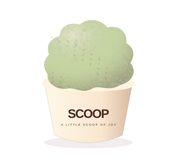
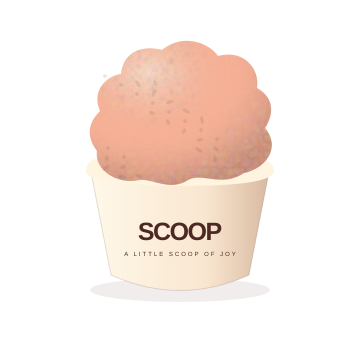
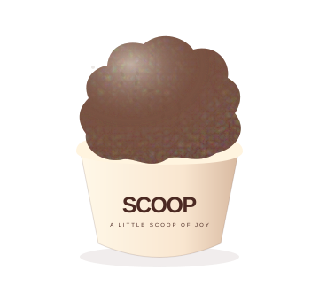
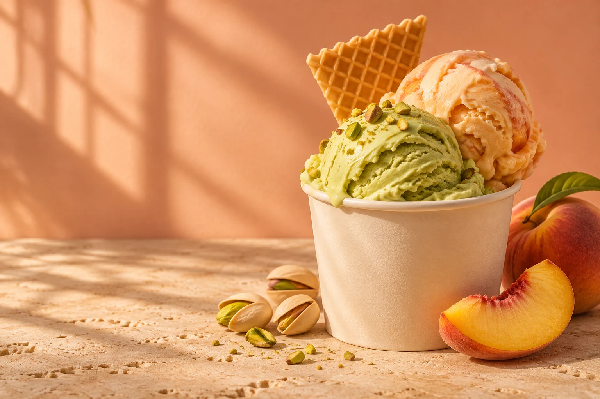
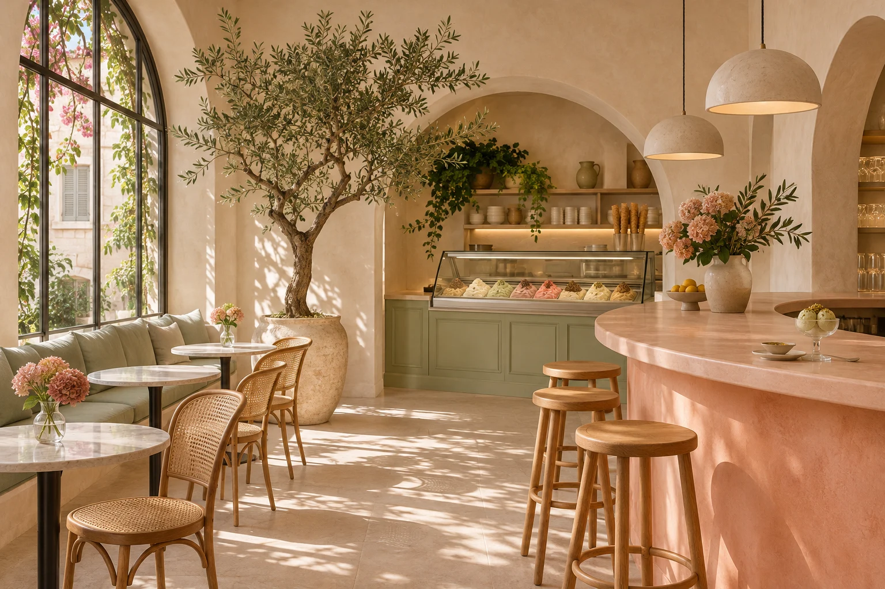

ореховая классика

Фисташка
6,50 BYNСливочная текстура, мягкая сладость и насыщенный ореховый вкус.
Немного солнца. Немного сливок.
И ваш любимый вкус — просто потому,
что сегодня хороший день.

Сливочная текстура, мягкая сладость и насыщенный ореховый вкус.

Солнечный персик, капля сливок и длинное летнее послевкусие.

Глубокий какао, бархатная текстура и совсем немного горчинки.

Отложить телефон. Выбрать вкус под настроение. Поймать тот самый момент, когда первый шарик начинает таять.
Мы придумали SCOOP как место для простых удовольствий. Здесь не нужен повод — достаточно захотеть мороженого.
Познакомиться поближе ↗Сливочная классика, яркие фрукты или ореховая глубина. В меню найдётся настроение на сегодня.
Персик дружит с фисташкой. Шоколад любит ваниль. А ваше любимое сочетание ещё впереди.
В рожке на прогулку или в стаканчике за уютным столиком — выбирайте свой способ сделать паузу.
Тёплый свет, мягкие оттенки, любимое место у окна. Таким мы видим пространство SCOOP — простым, открытым и немного солнечным.
Спланировать визит ↗Визуализация пространства учебного проекта.
